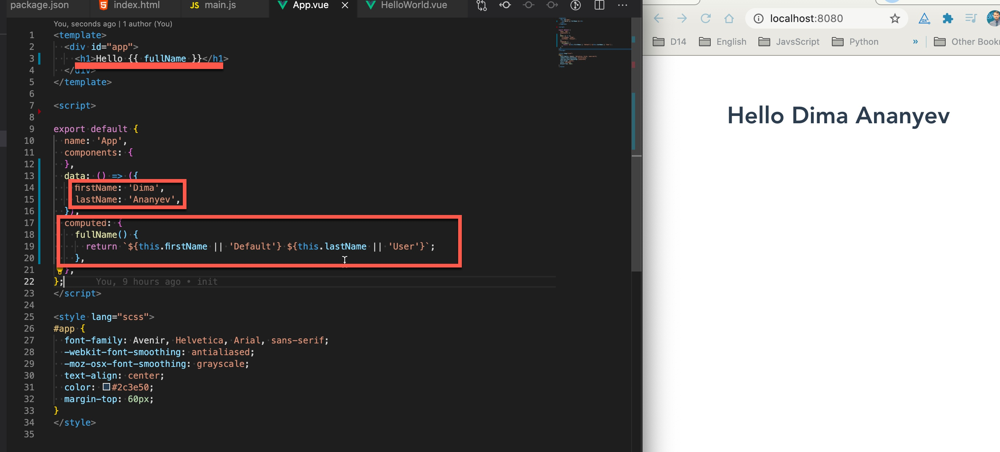
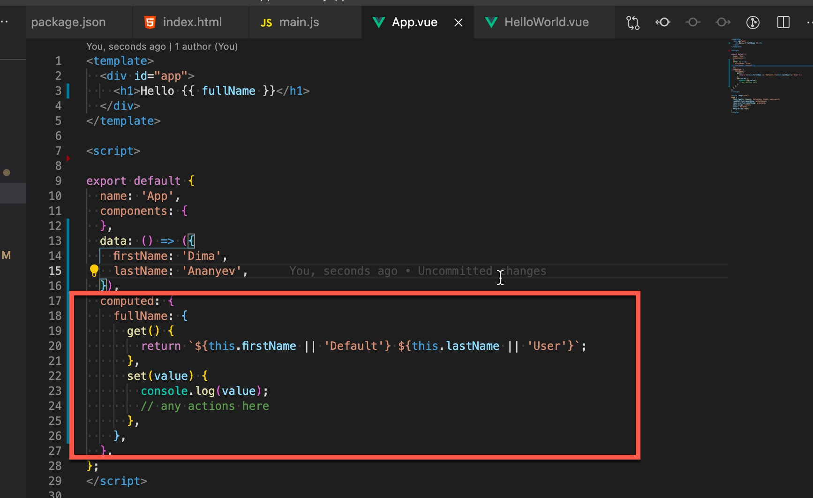

Light introduction to Vue.js
What is Framework?
-
Frameworks need for creation Single page Applications (SPA) and not only this
-
The framework defines the basic structure and organization of the code
-
The framework defines the structure of the application at the file system level and provides tools for compiling and debugging it
-
The framework increases the speed of development as well as support and bug fixes in applications
-
The ability to create cross-platform applications
-
The framework makes it easier for several developers to work on an application at the same time because framework has modules
Why Vue.js?
Execution speed
Lightweight
A lot of things are already out of the box. Routing, Vuex, Test utils, PWA, preprocessor support, animation, etc
Can start to use without additional knowledge
Vue CLI
Vue UI Tool. A graphical interface
Documentation
Get started
Plugin: Eslint
Plugin: Vetur
Plugin: Prettier
Need to do some VS code settings
Install Vue.js devtools plugin
Installing Vue CLI
Node.js
Vue CLI
npm install -g @vue/cli
Vue commands
vue version
vue create myapp
Installing Vue CLI
Folder structure
Vue components
Attribute syntax
Directives. v-if/v-else
Template directive
v-show/v-if
Event handling
Event handling
Event handling
Get data from target and save it to variable
Computed properties

Computed properties: Get/Set

Watch
Bind styles